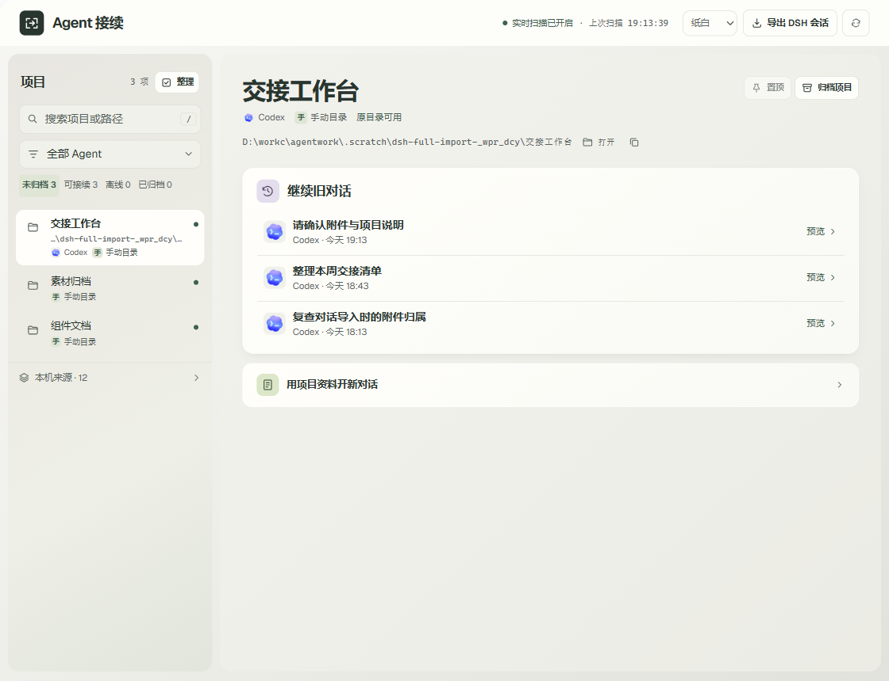
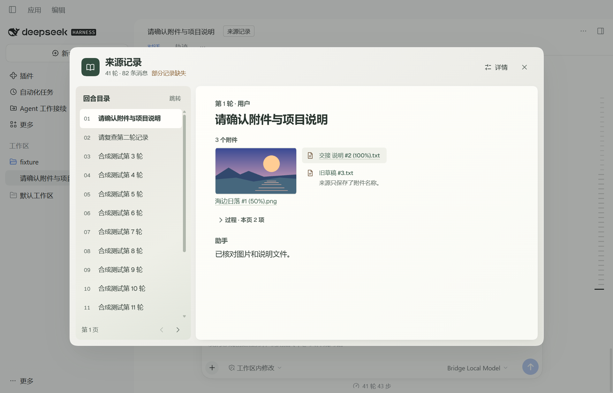

项目记忆
从项目资料中选择当前状态和约定，整理成带来源的上下文。
DEEPSEEK HARNESS 插件 v0.10.0
旧对话、项目记忆和 Skills 都有迹可循。在 DSH 找到原来的项目，带上需要的上下文，继续下一步。
本机读取 · 先预览，再迁入


项目资料
挑选项目记忆、交接文档和 Skills，预览后生成可编辑的会话草稿。
从项目资料中选择当前状态和约定，整理成带来源的上下文。
核对技能包后为当前项目启用，脚本和参考文件随包保存。
导出本机版或分享版，将资料带到下一次工作中。
开始使用
安装后完全退出并重新打开 DSH，在侧栏选择「Agent 工作接续」。